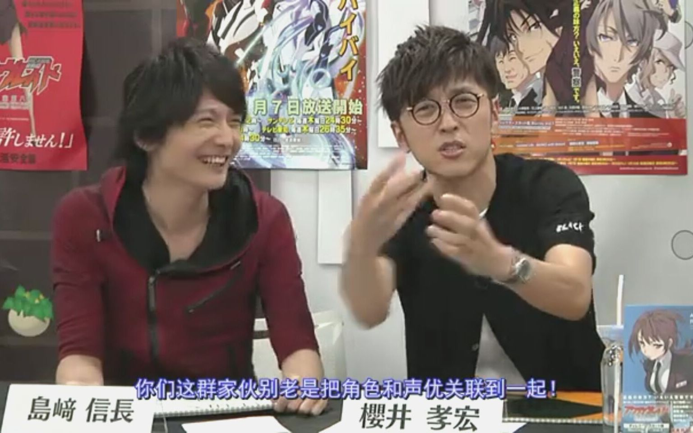
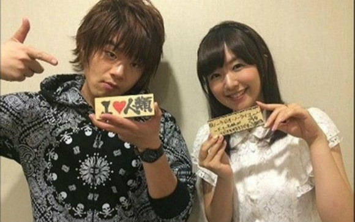

刀剑背后的故事——声优篇
松冈爱衣催婚协会~

你们这群家伙别老是把角色和声优关联到一起...

当黑白之剑交叉时，那一刻就许下要永远保护你，彼此守护着对方。 为了你我可以献出我的全部，包括生命，没有你的世界我也活不下去，如果你死了我也会自杀，这是不能不让人钦佩的爱情。 虽然是虚拟世界，但是心意却不是假的，想要和你在一起的想法一刻都没有改变，回到现实世界我第一想见到的人就是桐人，再一次喜欢你，和你真正的交往，真正的结婚 --亚丝娜